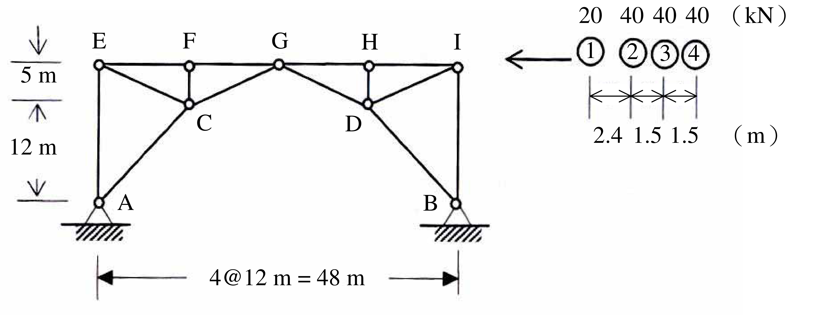
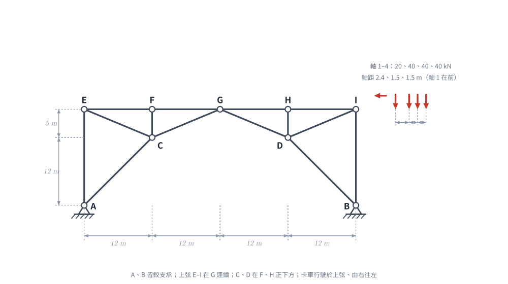

📄 題目正本（考卷原文、附圖與判讀清單；不含解法）
SA-2007-3 題目正本
本檔只記錄考卷上寫了什麼、圖上畫了什麼，不含任何解法。解析見同資料夾
SA-2007-3.md。
判讀清單經使用者確認前，狀態為「待確認」；確認後本檔原則上不再修改（改動須回考卷原圖並記 log）。
| 項目 | 內容 |
|---|---|
| 考卷 | raw/exams/SA-2007_結構學.pdf，第 2 頁（背面），全一張，第三題 |
| 考年 | 2007（民國九十六年）專技高考結構工程技師「結構學」 |
| 配分 | 25 分 |
| 附圖 | SA-2007-3-fig-2.png（2026-11-07 重新擷取）；既有 SA-2007-3-fig-1.png |
| 判讀狀態 | 已確認（2026-11-07 使用者確認；影響答案項目定案：#9「A 點反力」以垂直反力 A_y 為主、合力並列（使用者決定）。原轉錄：2026-11-07 轉錄；PyMuPDF 110 dpi 整頁＋450–1200 dpi 局部放大；考卷可抽文字，逐字原文以 PDF 文字層核對；盲讀於開啟解析前完成） |
1. 考卷原文（逐字）
三、如圖所示桁架（truss）在卡車系列載重作用下，求最大可能之 A 點反力及 FG 桿件內力。（25 分）
2. 考卷給的公式、附表與參數
- 考卷沒有給任何參考公式或附表。
- 卡車系列載重（圖上）：軸 ①②③④ 依序 20、40、40、40 kN，軸距 2.4、1.5、1.5 m。
- 考卷沒有給 EA；沒有明說卡車行駛於哪一弦（圖上卡車與上弦同高）。
- 卷首注意事項：㈠可以使用電子計算器。㈡不必抄題，作答時請將試題題號及答案依照順序寫在試卷上，於本試題上作答者，不予計分。
- 考試時間：2 小時。
3. 附圖

證據圖 SA-2007-3-fig-2.png（2026-11-07 自考卷 500 dpi 重新擷取）；既有 SA-2007-3-fig-1.png 帶有滑鼠游標（手形小游標在兩支承之間空白處，未壓到構件），保留不改。
圖面文字照錄：E、F、G、H、I、C、D、A、B、5 m、12 m、4@12 m = 48 m、20 40 40 40（kN）、①②③④、2.4 1.5 1.5（m）
4. 判讀清單
| # | 項目 | 判讀 | 圖上／題文依據 | 把握 |
|---|---|---|---|---|
| 1 | 座標（以 A 為原點） | A(0,0)、B(48,0)；E(0,17)、F(12,17)、G(24,17)、H(36,17)、I(48,17)；C(12,12)、D(36,12) | 左側 5 m、12 m 尺寸線；下方 4@12 m = 48 m；C 在 F 正下方、D 在 H 正下方（450–900 dpi） | 確定 |
| 2 | 上弦 | E–F–G–H–I 為一直線，G 處連續（不是斷開） | 900 dpi 局部：G 節點左右上弦皆接入同一節點圈 | 確定 |
| 3 | 桿件 | 上弦 EF、FG、GH、HI；豎桿 AE、IB、FC、HD；斜桿 AC、EC、CG、GD、DI、DB；共 14 桿 | 450 dpi 圖面 | 確定 |
| 4 | 支承 A、B | 皆為鉸支承（節點圈＋三角形＋剖線） | 圖上符號 | 確定 |
| 5 | 結構型式 | A、B 兩鉸、上弦節點 G 為左右兩半唯一共用節點：j = 9、m = 14、r = 4，2j = m + r（靜定，三鉸拱式桁架） | 計數＋構成 | 確定 |
| 6 | 卡車軸重與軸距 | ① 20、② 40、③ 40、④ 40 kN；2.4、1.5、1.5 m | 圖上數字 | 確定 |
| 7 | 行駛方向 | 由右往左，① 為車頭 | 箭頭「←」在 ① 左方 | 確定 |
| 8 | 載重作用弦 | 上弦 E–I（卡車畫在上弦高度） | 圖面位置 | 確定（解讀）；使用者確認 |
| 9 | A 點反力 | 題文只說「A 點反力」，A 為鉸支承有垂直與水平兩分量；考卷沒有指定哪一個 | 題文 | 不確定（影響答案，請確認）；使用者確認 |
| 10 | 所求 | 最大可能之 A 點反力、FG 桿件內力 | 題文 | 確定 |
轉錄：2026-11-07（SA-U1-3 題目正本推廣・批 1）
確認：2026-11-07 使用者確認
考題編號：[SA-2007-3]
主分類： SA-U1-3 靜定及靜不定結構影響線
副分類： 無
分析法： 影響線
標籤： 三鉸拱桁架 移動載重 極值分析 卡車載重
1. 題目（考卷原文見題目正本）
考卷原文、公式／附表、附圖與判讀清單（已確認）見
SA-2007-3-problem.md。本節只列解題時最容易讀錯的地方與本解使用的記號；題意以題目正本為準。

重繪自考卷附圖，依判讀清單 #1–#10 重繪。攔：A 或 B 讀成滾支承（當成簡支桁架）、C／D 高程讀錯、G 讀成上弦斷開。
常見誤讀
| 項目 | 正確判讀 | 常見誤讀 |
|---|---|---|
| A、B 支承 | 皆為鉸支承；G 為左右兩半唯一共用節點（三鉸拱式桁架） | 一端滾支承 |
| C、D 高程 | 距支承 12 m、距上弦 5 m，在 F、H 正下方 | 在上弦或支承高度 |
| 「A 點反力」 | 考卷沒有指定分量；本解以垂直反力 $A_y$ 為主、合力並列（使用者 2026-11-07 決定） | 只給合力或只給水平推力 |
| 卡車行駛弦 | 上弦 E–I（依圖位置；考卷沒有明說） | 下弦 |
本解記號： 記號與正負號約定沿用 §4。
2. 考題核心精神與出題者意圖 (Core Concepts & Examiner's Intent)
- 三鉸拱的幾何洞察： 考驗考生是否能看出此複雜桁架實質上是一個「三鉸拱 (Three-Hinged Arch)」結構。A、B 兩底端為鉸支承，G 點為內部鉸接。這是求解水平反力的唯一破口。
- 影響線建立能力： 針對非典型結構 (帶有水平反力的拱)，建立特定反力 ($A_y, A_x$) 與特定桿件內力 ($F_{FG}$) 的影響線方程式。
- 卡車載重極值分析： 將多輪軸之卡車載重放置於影響線上，透過嘗試不同輪軸對齊影響線峰值，找出產生最大正負響應的最劣載重位置。
3. 解題戰略地圖與陷阱分析 (Strategic Roadmap & Trap Analysis)
- 戰略一：判別結構系統並求反力影響線
- 確認結構為靜定的三鉸拱桁架。
- 垂直反力 $A_y$：以整體對 B 取力矩求得，其影響線不受水平反力影響。
- 水平反力 $A_x$：利用 G 點為內部鉸之特性，將單位載重分左右兩側情況，對 G 點取力矩求得 $A_x$ 的影響線。
- 戰略二：建立目標桿件內力影響線
- 利用截面法切過 FG、CG 桿件，取左半自由體。
- 對 C 點取力矩，建立包含 $F_{FG}, A_x, A_y$ 及外力力矩的方程式。
- 代入 $A_x, A_y$ 影響線，計算出幾個關鍵點 (E, F, G, H, I) 的影響線縱距。
- 戰略三：極值計算
- 最大 $R_A$： 將卡車前端最重輪軸靠近 A 點上方 (E 點)，因 $A_y$ 在此處有最大值。
- 最大 $F_{FG}$ (壓力與拉力)： 將卡車置於 $F_{FG}$ 影響線的最大負值 (F 點) 處求最大壓力，置於最大正值 (G 點) 處求最大拉力。
- 陷阱分析：
- 陷阱 1 (忽視水平反力)： 若未將 A、B 視為鉸支承並計算水平推力 $A_x$，後續所有桿件內力皆會錯誤。
- 陷阱 2 (影響線峰值對位)： 求卡車極值時，不能只將總重乘上單一縱距，必須計算各輪軸對應位置之縱距並乘上各自載重。最大值通常發生在最重輪軸 (如 40 kN) 對齊影響線峰谷處，有時需要測試相鄰兩重輪軸以確認何者為極大值。
3.5 變數層次分析 (Variable Hierarchy Analysis)
最終目標
求出卡車通過時，A 點最大反力及 FG 桿件最大內力極值
本題關鍵公式（依計算順序）
-
垂直反力影響線 (單位力在 $x$)：
$\sum M_B = 0 \implies \boxed{A_y(x)}$ -
水平反力影響線 (單位力在 $x$)：
$\sum M_G = 0 \implies \boxed{A_x(x)}$ -
目標桿件內力影響線 (截面法對 C 取矩)：
$\sum M_C = 0 \implies F_{FG} = f(\boxed{A_x(x)}, \boxed{A_y(x)}, M_{C,\text{load}})$ -
車隊載重極值：
$Response = \sum P_i \cdot \boxed{IL(x_i)}$
L1：題目直接給定
| 符號 | 數值 | 說明 |
|---|---|---|
| $L$ | $48 \text{ m}$ | 總水平跨距 |
| $(x_G, y_G)$ | $(24\text{ m}, 17\text{ m})$ | 中央鉸 G 點座標 |
| $(x_C, y_C)$ | $(12\text{ m}, 12\text{ m})$ | 轉軸中心 C 點座標 |
| $P_1$ | $20 \text{ kN}$ | 第一輪軸重 |
| $P_2, P_3, P_4$ | $40 \text{ kN}$ | 第二至四輪軸重 |
| $\Delta x_{12}$ | $2.4 \text{ m}$ | 一、二輪軸間距 |
| $\Delta x_{23}, \Delta x_{34}$ | $1.5 \text{ m}$ | 輪軸間距 |
L2：需知識點推導
反力影響線
| 符號 | 公式／來源 | 卡關? |
|---|---|---|
| $A_y(x)$ | $\frac{48-x}{48}$ | |
| $A_x(x)$ | $\frac{x}{34}$ ($x \le 24$), $\frac{48-x}{34}$ ($x > 24$) | |
桿件內力影響線
| 符號 | 公式／來源 | 卡關? |
|---|---|---|
| $F_{FG}(x)$ | $\frac{12A_x - 12A_y + M_{C,\text{load}}}{5}$ | |
L3：深層知識（不懂就卡住）
| 知識點 | 說明 | 卡關? |
|---|---|---|
| 三鉸拱分析 | 必須利用內部鉸 G 點彎矩為零的條件，才能解出靜定結構的水平反力 | |
| 影響線極值計算 | 將多軸載重移動，使主輪重對齊影響線峰值，以求得全結構最劣受力狀態 |
4. 步驟化詳細計算過程 (Step-by-Step Detailed Calculation)
Step 1: 建立支承反力影響線
設單位載重 (1 kN) 作用於頂部弦桿，座標 $x$ 自最左端 E 點 ($x=0$) 向右起算至 I 點 ($x=48$)。
- 垂直反力 $A_y$：
整體對 B 點取力矩：
$A_y \cdot 48 - 1 \cdot (48 - x) = 0 \implies \boxed{A_y(x) = \frac{48 - x}{48}}$ - 水平反力 $A_x$：
利用 G 點 $(x=24, y=17)$ 為內部鉸之特性。- 當載重在 G 點右側 ($x > 24$)：取左半自由體對 G 點取力矩
$A_y(24) - A_x(17) = 0 \implies A_x = \frac{24}{17} A_y = \frac{24}{17} \left( \frac{48 - x}{48} \right) = \frac{48 - x}{34}$ - 當載重在 G 點左側 ($x \le 24$)：取右半自由體對 G 點取力矩
$-B_y(24) + B_x(17) = 0 \implies B_x = \frac{24}{17} B_y = \frac{24}{17} \left( \frac{x}{48} \right) = \frac{x}{34}$
由整體 $\sum F_x = 0$ 得 $\boxed{A_x = B_x = \frac{x}{34}}$
- 當載重在 G 點右側 ($x > 24$)：取左半自由體對 G 點取力矩
Step 2: 建立 FG 桿件內力影響線
策略註解：切斷 FG、CG 桿件，取左半邊為自由體。為消去未知力 $F_{CG}$，對 C 點 $(12, 12)$ 取力矩。
- $A_y$ 向上，力臂 12m，造成順時針力矩 (取順時針為負)：$-12 A_y$
- $A_x$ 向右，力臂 12m，造成逆時針力矩 (取逆時針為正)：$+12 A_x$
- $F_{FG}$ (設為拉力向右) 在 F(12, 17) 處，力臂 5m，造成順時針力矩：$-5 F_{FG}$
- 外力 1 kN 產生的力矩 $M_C$：若 $x \le 12$，力矩為 $+1 \cdot (12 - x)$；若 $x > 12$，載重不在左半自由體上，力矩為 0。
平衡方程式：$\sum M_C = 12 A_x - 12 A_y + M_C - 5 F_{FG} = 0 \implies F_{FG} = \frac{12 A_x - 12 A_y + M_C}{5}$
計算各節點縱距：
- $x=0$ (E): $A_y=1, A_x=0, M_C=12 \implies F_{FG} = \frac{0 - 12 + 12}{5} = \boxed{0}$
- $x=12$ (F): $A_y=\frac{36}{48}=\frac{3}{4}, A_x=\frac{12}{34}=\frac{6}{17}, M_C=0 \implies F_{FG} = \frac{12(6/17) - 12(3/4)}{5} = \boxed{-\frac{81}{85} \approx -0.953 \quad (\text{壓力})}$
- $x=24$ (G): $A_y=\frac{24}{48}=\frac{1}{2}, A_x=\frac{24}{34}=\frac{12}{17}, M_C=0 \implies F_{FG} = \frac{12(12/17) - 12(1/2)}{5} = \boxed{\frac{42}{85} \approx 0.494 \quad (\text{拉力})}$
- $x=36$ (H): $A_y=\frac{12}{48}=\frac{1}{4}, A_x=\frac{12}{34}=\frac{6}{17}, M_C=0 \implies F_{FG} = \frac{12(6/17) - 12(1/4)}{5} = \boxed{\frac{21}{85} \approx 0.247 \quad (\text{拉力})}$
- $x=48$ (I): $A_y=0, A_x=0 \implies \boxed{0}$
Step 3: 卡車載重極值分析
卡車由右向左行駛，輪重：$P_1=20$, $P_2=40$ (距$P_1$ 2.4m), $P_3=40$ (距$P_2$ 1.5m), $P_4=40$ (距$P_3$ 1.5m)。
A. 最大 A 點反力 ($R_A$)
最大垂直反力發生在車頭剛到 E 點 ($x=0$)：
- 輪軸位置：$x_1=0$, $x_2=2.4$, $x_3=3.9$, $x_4=5.4$
- $A_y = 20(1) + 40(\frac{48-2.4}{48}) + 40(\frac{48-3.9}{48}) + 40(\frac{48-5.4}{48}) = 20 + 38 + 36.75 + 35.5 = \boxed{130.25 \text{ kN}}$
- 對應之 $A_x = \frac{1}{34} [20(0) + 40(2.4) + 40(3.9) + 40(5.4)] = \frac{468}{34} \approx 13.76 \text{ kN}$
- 合力（並列參考）：$R_A = \sqrt{A_x^2 + A_y^2} = \sqrt{13.76^2 + 130.25^2} \approx 130.97 \text{ kN}$
B. FG 桿件最大壓力
影響線在 F 點 ($x=12$) 有負最大值 $-81/85$。嘗試將主重輪 $P_3$ 置於 $x=12$：
- 輪軸位置：$x_1=8.1$, $x_2=10.5$, $x_3=12$, $x_4=13.5$
- 計算對應之影響線縱距 $IL_i$：
$IL_1 = (\frac{8.1}{12})(-\frac{81}{85}) = -\frac{54.675}{85}$
$IL_2 = (\frac{10.5}{12})(-\frac{81}{85}) = -\frac{70.875}{85}$
$IL_3 = -\frac{81}{85}$
$IL_4 = -\frac{81}{85} + (\frac{13.5-12}{12})(\frac{42 - (-81)}{85}) = -\frac{65.625}{85}$ - $F_{FG,\text{comp}} = \frac{1}{85} [20(-54.675) + 40(-70.875) + 40(-81) + 40(-65.625)] = \frac{-9793.5}{85} = \boxed{-115.22 \text{ kN}}$
C. FG 桿件最大拉力
影響線在 G 點 ($x=24$) 有正最大值 $42/85$。嘗試將主重輪 $P_2$ 置於 $x=24$：
- 輪軸位置：$x_1=21.6$, $x_2=24$, $x_3=25.5$, $x_4=27.0$
- 計算對應之影響線縱距 $IL_i$：
$IL_1 = \frac{42}{85} - (\frac{24-21.6}{12})(\frac{81+42}{85}) = \frac{17.4}{85}$
$IL_2 = \frac{42}{85}$
$IL_3 = \frac{42}{85} - (\frac{25.5-24}{12})(\frac{42-21}{85}) = \frac{39.375}{85}$
$IL_4 = \frac{42}{85} - (\frac{27-24}{12})(\frac{21}{85}) = \frac{36.75}{85}$ - $F_{FG,\text{tens}} = \frac{1}{85} [20(17.4) + 40(42) + 40(39.375) + 40(36.75)] = \frac{5073}{85} = \boxed{59.68 \text{ kN}}$
5. 關鍵爭議點與進階探討 (Critical Issues & Advanced Discussion)
- 影響線極值的選點測試： 在計算 $F_{FG}$ 最大壓力時，為何選擇 $P_3$ 而非 $P_2$ 或 $P_4$ 對齊頂點？實務作法是透過斜率準則 (變號點) 測試，或將幾個相近的重輪軸輪流放在頂點計算比較。在考場上，若直觀判斷不明確，必須快速手算相鄰兩個主要輪軸對齊峰值的情況，以數值大小決斷。此處經數值驗證，$P_3$ 在 F 點的配置確實會產生最大的總和負值。
- 最大反力的定義： 考卷只寫「最大可能之 A 點反力」，沒有指定分量，而 A 為鉸支承，有垂直 $A_y$ 與水平 $A_x$ 兩個分量。本解以垂直反力為主答案：$A_{y,\max} = 130.25\text{ kN}$（車頭在 E）。若問反力合力，同一車位 $A_x = 13.76\text{ kN}$，合力 $130.97\text{ kN}$；$A_x$ 的極大值出現在卡車靠近跨中央時，但那時 $A_y$ 小得多，逐點掃描卡車位置可確認合力最大值仍是 $130.97\text{ kN}$。作答時兩者並列，並寫明採用哪一個。
修正日期：2026-11-07（§1 改為指向題目正本並放重繪附圖（figs/SA-2007-3-fig-1-problem.svg）、加常見誤讀；最大 A 點反力改以垂直反力 A_y 為主、合力並列（使用者決定，數值不變）；圖由 gen_SA-2007-3.py 產生，可重跑）